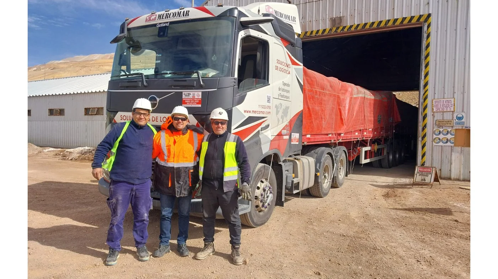

El 27 de agosto, Volvo Trucks Argentina informó la finalización de una prueba poco habitual: un bitren de 75 toneladas completó una operación en la cordillera a más de 4.500 metros sobre el nivel del mar. El conjunto combinó un Volvo FH 540 6x4 con dos semirremolques fabricados por Vulcano y una planificación logística coordinada por MERCOMAR, empresa de Robinson Group.
No fue una demostración sobre asfalto perfecto. El recorrido incluyó pendientes pronunciadas, curvas cerradas, ripio deformado, bajas temperaturas y los efectos propios de la altura. La evaluación buscó medir comportamiento dinámico, capacidad operativa y seguridad en un escenario cercano al que enfrentan las operaciones mineras.
Qué conjunto participó
La unidad tractora fue un Volvo FH 540 6x4. La marca destacó el motor D13C de 540 hp, la transmisión automatizada I-Shift de séptima generación y el doble eje de tracción. La configuración 6x4 distribuye el esfuerzo sobre dos ejes motrices y resulta especialmente apropiada cuando el terreno, la pendiente y el peso exigen mayor capacidad de avance.
Los dos semirremolques fueron desarrollados por la firma argentina Vulcano. Incorporaron suspensión neumática integral, frenos ABS y EBS, control electrónico de suspensión, balanza de peso y un chasis totalmente abulonado para soportar torsiones producidas por desniveles y diferencias de piso. La posición del plato de enganche ayuda a que el segundo remolque siga la trayectoria del primero, un punto crítico en curvas estrechas.
MERCOMAR tuvo a su cargo la planificación y coordinación de la operación. En alta montaña no basta con disponer de potencia: hay que definir carga, recorrido, ventanas climáticas, lugares de detención, comunicaciones y procedimientos de contingencia.
Por qué la altura cambia todo
A más de 4.500 metros el aire tiene menor densidad. En un motor turboalimentado moderno, la gestión electrónica y el turbocompresor compensan parte de esa pérdida, pero el conjunto trabaja bajo una demanda térmica elevada. Temperatura de refrigerante, presión de sobrealimentación, estado del filtro de aire y calidad del combustible se vuelven variables decisivas.
En los ascensos importa sostener el par sin llevar innecesariamente el motor a temperaturas extremas. En los descensos, la prioridad pasa al control de velocidad. El freno motor, la selección anticipada de marcha y la coordinación del EBS entre tractora y remolques deben reducir el uso continuo de los frenos de servicio para evitar calentamiento y pérdida de eficacia.
La marca informó una buena reserva de potencia en subida y una respuesta controlada durante los descensos. Ese resultado es relevante, aunque una prueba exitosa no significa que cualquier bitren pueda repetir el recorrido sin preparación: cada operación necesita su propio estudio de ruta, carga, clima y configuración.

El marco argentino para los bitrenes
La Resolución 1196/2025 amplió la libre circulación de bitrenes sobre la Red Vial Nacional, con excepciones vinculadas con curvas de radio reducido y puentes cuya capacidad no admite 75 toneladas. La norma contempla configuraciones de hasta 30,25 metros y 75 toneladas cuando cumplen los requisitos técnicos de ejes.
El Decreto 689/2026 mantuvo ese esquema y fijó para tractoras con un peso bruto total combinado superior a 55,5 toneladas una relación mínima de 6,75 CV por tonelada. El conjunto ensayado, con 540 hp para 75 toneladas, supera matemáticamente esa relación, pero la habilitación final también depende de dimensiones, ejes, documentación, recorrido y restricciones específicas.
Por eso la noticia tiene dos lecturas. La primera es tecnológica: demuestra que una configuración de serie adaptada puede operar en un ambiente muy exigente. La segunda es operativa: antes de programar un viaje se deben consultar los tramos restringidos y la capacidad de la infraestructura.
Qué aporta a la minería
En una mina, mover más toneladas por viaje puede reducir la cantidad de unidades necesarias para un mismo volumen. Eso disminuye kilómetros, horas de conducción y consumo por tonelada transportada. Volvo señala que un bitren puede llevar hasta un 75% más de carga que un camión convencional, aunque el beneficio real depende del tipo de mercadería y del límite de peso por eje.
La productividad no debe calcularse solamente con la carga útil. También cuentan el tiempo de carga y descarga, la velocidad media, la disponibilidad mecánica, el desgaste de neumáticos y frenos, y el costo de disponer de equipos de respaldo. Una configuración de gran capacidad es conveniente cuando todo el circuito logístico está preparado para recibirla.
Mantenimiento para una operación extrema
- Admisión: controlar saturación del filtro, mangueras, abrazaderas e intercooler después de circular sobre polvo fino.
- Refrigeración: revisar radiador, viscoso o electroventiladores, correas, refrigerante y posibles pérdidas.
- Frenos: comprobar discos o campanas, pastillas o cintas, sensores ABS, moduladores EBS y ausencia de fugas de aire.
- Enganches: inspeccionar quinta rueda, perno rey, seguros, lubricación y holguras entre los dos semirremolques.
- Suspensión: verificar pulmones, válvulas niveladoras, amortiguadores, bujes y fijaciones del chasis.
- Neumáticos: medir presión en frío, profundidad, cortes y diferencias de diámetro entre ruedas hermanadas.
- Electricidad: proteger conectores, revisar iluminación, cableado de remolques y comunicación de los sistemas electrónicos.
Una prueba que deja información útil
El valor del ensayo está en haber llevado la configuración fuera de una pista y haber generado datos para futuras operaciones. El comportamiento del segundo semirremolque, la reserva del motor y el control en bajada son resultados que deben complementarse con registros de consumo, temperatura, desgaste y tiempos de ciclo.
Para transportistas y talleres, también anticipa una tendencia: si crecen los bitrenes en minería, energía y agro, aumentará la demanda de componentes para frenos electrónicos, suspensión neumática, enganches, cardanes, filtros y refrigeración. Mantener estos conjuntos requiere mirar la unidad completa, no solamente el camión tractor.